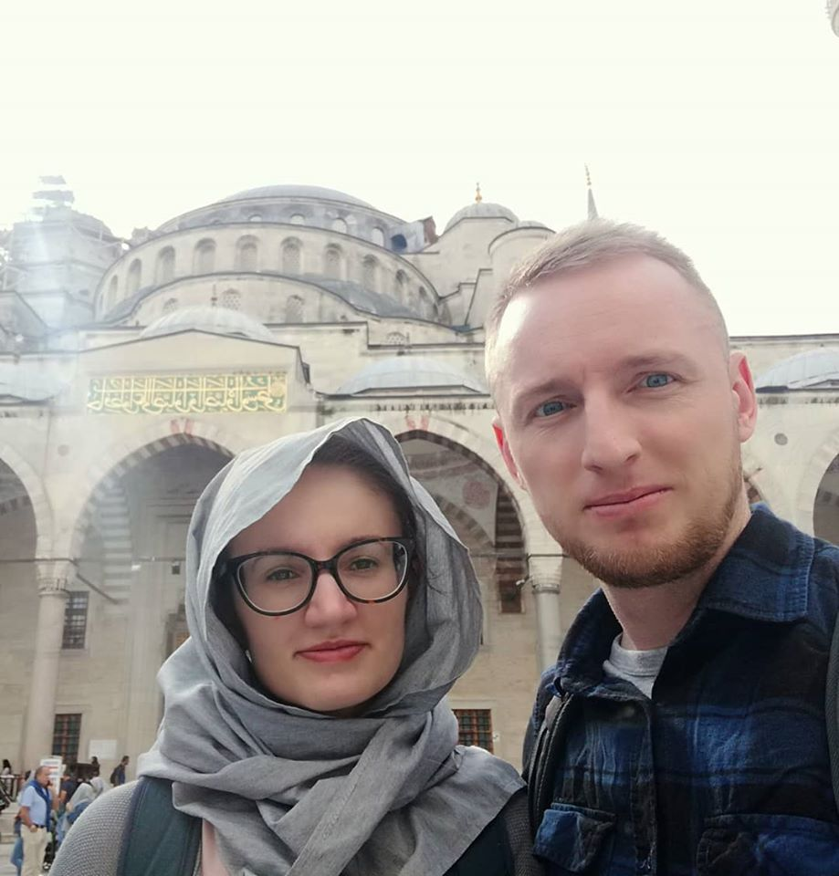
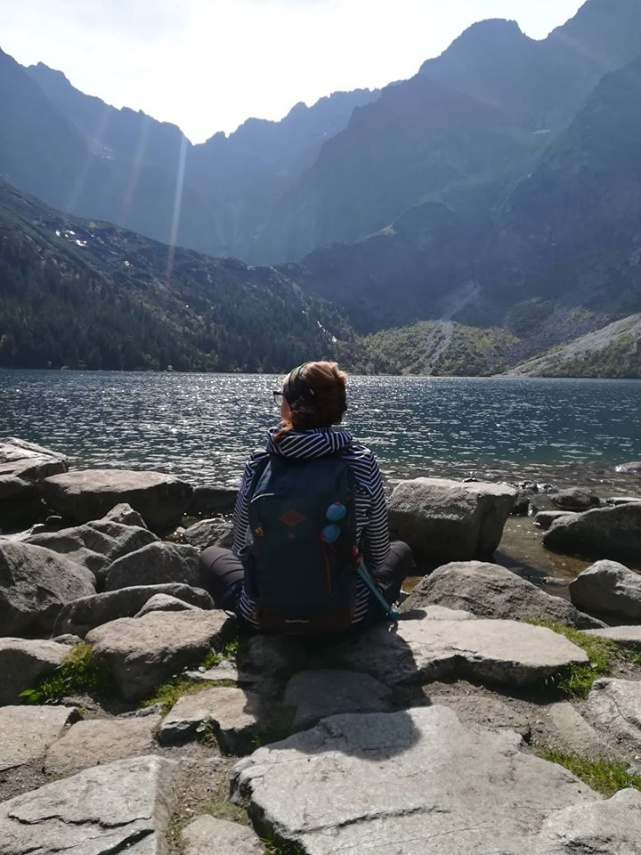

O mnie
Cześć! Bardzo miło mi gościć Cię w moich skromnych progach! Skorzystam z okazji i opowiem o sobie i moim stylu pracy.
Mam na imię Ania, jestem już dojrzałą i stateczną gdańszczanką – nie z urodzenia, a nadania. Poza tym mam w sobie (nie)wielką dozę humoru i uśmiechu, więc nie jest ze mną nudno ;)

Na co dzień pracuję jako analityk w jednej z największych polskich firm. Uwielbiam spędzać wolny czas
leniuchując, ale i spędzając go aktywnie – najchętniej na spacerach nad morzem latem oraz w pozostałe
pory
roku w trójmiejskich lasach. Najchętniej spędzam czas z najbliższymi! I nie ukrywam, że zdarza mi się
wyciągać aparat będąc z Nimi bo nigdy nie wiem, czy nie spotka nas coś wyjątkowego ;)
Nie straszne jest mi gotowanie oraz pieczenie ciast – z nieskrywaną radością upiekę prawdziwą Pavlovą
czy
przygotuję prawdziwą musakę.
Zdjęcia towarzyszą mi w podróżach małych i dużych. Najlepszym ich Kompanem jest mój Kochany Mąż. Nie liczy się miejsce, a osoba, z którą spędzam ten czas! Obojętnie, czy są to polskie góry czy też środek miasta. Największe wrażenie zrobił na Nas Stambuł i na pewno jeszcze tam wrócimy!
 Jakie są moje zdjęcia?
Fotografia jest moim hobby, moim wielkim zainteresowaniem, moją pasją już od blisko kilkunastu lat.
W zdjęciach lubię autentyczność i nigdy nie ukrywam tego, że jeśli polubicie mnie – polubicie też to,
jak
Was widzę, a tym samym jakie zdjęcia otrzymacie. Jestem osobą dość otwartą i wydaje mi się, że dość
szybko
potrafię złapać z ludźmi wspólny język. Podczas fotograficznych spotkań nie chcę wprowadzać sztywnej
atmosfery i wolę dać Wam czas na przyzwyczajenie się do mojej obecności niż kurczowo trzymać się ram
czasowych.
Moje fotografie to przede wszystkim uśmiech, spokój, luz i prawdziwe emocje. Uwielbiam momenty
wzruszenia,
momenty radości ale i nieobce są mi płacze i krzyki (choćby najmłodszych modeli zniecierpliwionych
bezruchem). Uważam, że najprzyjemniej jest, gdy spędzamy czas w Waszym domowym zaciszu bądź w miejscach,
które znacie, lubicie i chętnie odwiedzacie. Oczywiście nie mam nic przeciwko nowym odkryciom - są one
bardzo inspirujące i jednocześnie pokazują, ile jeszcze nieznanego przede mną.
Jeżeli po przeczytaniu tych kilku(-set) słów uważasz, że możemy stworzyć wspólnie coś dobrego –
zapraszam do KONTAKTU